Chapter 3 Titanic - studies on classification
In this chapter we will turn our focus to classification techniques. The data set used will be the Kaggle data set Titanic.
The first section will focus on data collection and data wrangling. The second section has its focus on EDA. In the third and last section we will study the following classification models and how to optimize them for the dataset: Logistic Regression, LDA, kNN, SVM, XGBoost and lightGBM.
The evaluation metric will be the Kaggle score for each model.
3.1 Data collection and cleaning
The data was downloaded from (Kaggle)[https://www.kaggle.com/c/titanic]. The data set is made up of two parts. Part 1 is a training set for supervised learning. Part 2 is a test set, where the outcome column has been removed.
We will begin by loading the two data files and have a look at the data types of each column:
titanic_train <- read_csv("./titanic_train.csv")## Rows: 891 Columns: 12
## ── Column specification ───────────────────────────────────────────────────────────────────────
## Delimiter: ","
## chr (5): Name, Sex, Ticket, Cabin, Embarked
## dbl (7): PassengerId, Survived, Pclass, Age, SibSp, Parch, Fare
##
## ℹ Use `spec()` to retrieve the full column specification for this data.
## ℹ Specify the column types or set `show_col_types = FALSE` to quiet this message.titanic_test <- read_csv("./titanic_test.csv")## Rows: 418 Columns: 11
## ── Column specification ───────────────────────────────────────────────────────────────────────
## Delimiter: ","
## chr (5): Name, Sex, Ticket, Cabin, Embarked
## dbl (6): PassengerId, Pclass, Age, SibSp, Parch, Fare
##
## ℹ Use `spec()` to retrieve the full column specification for this data.
## ℹ Specify the column types or set `show_col_types = FALSE` to quiet this message.We see that the training data is comprised of 891 observation of 12 features, whereas the test data is comprised of 418 observations of 11 features.
We have 5 features coded as charaters: Name, Sex, Ticket, Cabin, Embarked.
We have 6 numeric features: PassengerId, Pclass, Age, SibSp. Parch, Fare.
Let us first see if we need to deal with missing values:
titanic_train %>%
select(which(colSums(is.na(.))>0)) %>%
summarise_all(~ sum(is.na(.)))## # A tibble: 1 × 3
## Age Cabin Embarked
## <int> <int> <int>
## 1 177 687 2We see that most of the cabin data is missing. We will not deal with these for now, but drop the column, when doing the actual modelling later.
For embarked we will replace the missing values with the mode. We start by determining the mode:
titanic_train %>% group_by(Embarked) %>% count() %>% arrange(desc(n))## # A tibble: 4 × 2
## # Groups: Embarked [4]
## Embarked n
## <chr> <int>
## 1 S 644
## 2 C 168
## 3 Q 77
## 4 <NA> 2Then we replace the NAs by “S”:
titanic_train <- titanic_train %>% mutate(Embarked = replace(Embarked,is.na(Embarked),"S"))Next, let’s have a look at the distribution of age:
titanic_train %>% count(Age_interval = cut_interval(Age,n=6))## # A tibble: 7 × 2
## Age_interval n
## <fct> <int>
## 1 [0.42,13.7] 71
## 2 (13.7,26.9] 248
## 3 (26.9,40.2] 245
## 4 (40.2,53.5] 100
## 5 (53.5,66.7] 43
## 6 (66.7,80] 7
## 7 <NA> 177We get see that Age seems right skewed. To verify this we calculate the skewness using the {moments} package:
titanic_train %>% select(Age) %>% filter(!is.na(.)) %>% summarise(Skewness = moments::skewness(.))## # A tibble: 1 × 1
## Skewness
## <dbl>
## 1 0.388With the right skewed age data we choose to impute the missing values in Age column with the median.
titanic_train <- titanic_train %>% mutate(Age = replace(Age,is.na(Age),median(Age,na.rm=TRUE)))With this we conclude the data collection and preparation process and move on to the EDA.
3.2 EDA
Lets begin by looking at the prior distrubution of survivals:
titanic_train %>%
mutate(Survived = as_factor(Survived)) %>%
mutate(Survived = fct_recode(Survived, "Died"="0","Survived"="1")) %>%
ggplot(aes(x=Survived,fill=Survived)) +
geom_bar(show.legend = FALSE) +
labs(x="Survival Status", y="Passenger Count", title = "Distribution of passenger status")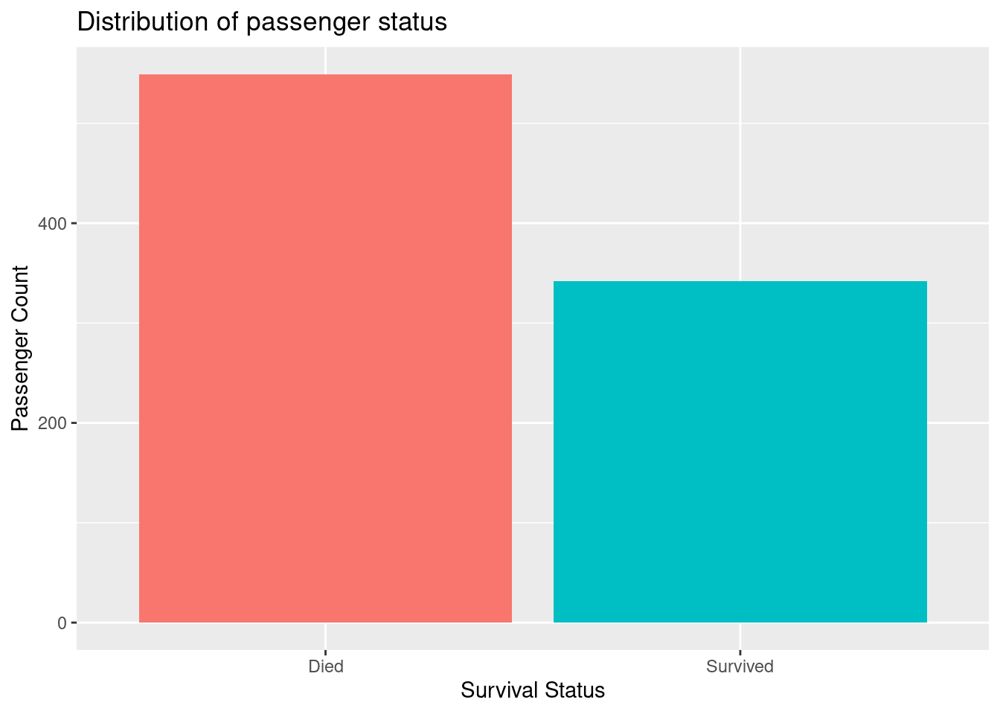 We see that roughly 3 of 5 died in the Titanic disaster. We now turn our attention to finding reasonable correlations in the data. A place to start would be a correlation diagram. We can choose to look only at the numerical features in the data set:
titanic_train %>%
select(which(sapply(.,is.numeric))) %>%
correlate(diagonal = 1,quiet=TRUE) %>%
rplot() +
guides(x=guide_axis(angle=90))## Don't know how to automatically pick scale for object of type noquote. Defaulting to continuous.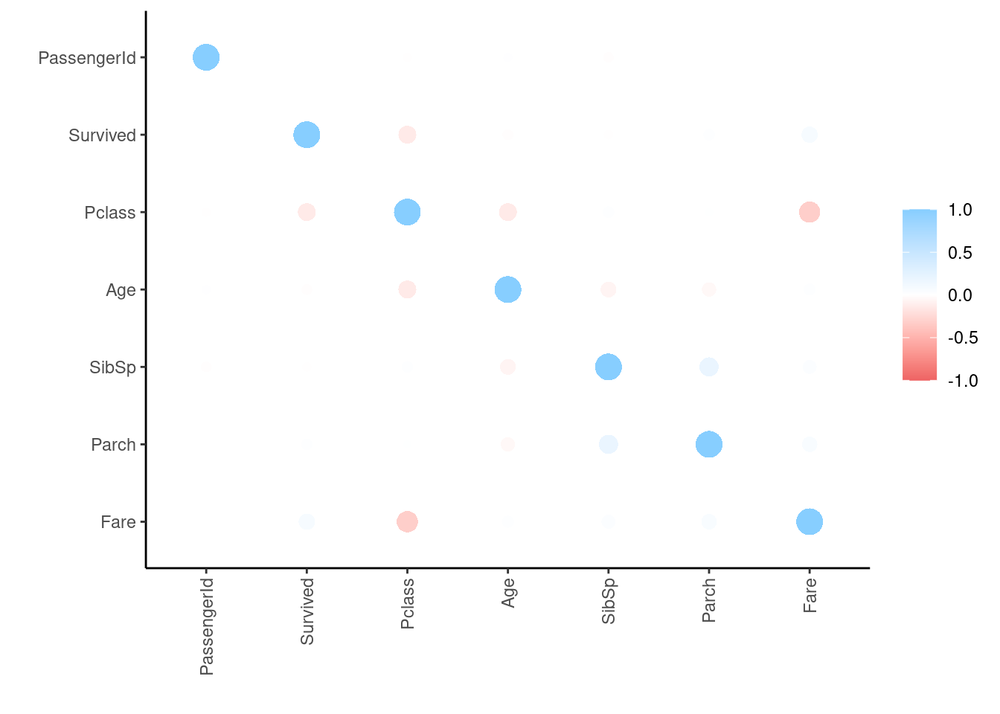 Alternatively we can one hot encode the relevant categorical variables and include them as well:
recipe(Survived ~ .,data=titanic_train) %>%
update_role(PassengerId,Name,Ticket,Cabin,new_role="ID") %>%
step_dummy(all_nominal_predictors(),one_hot=TRUE) %>%
prep(retain=TRUE) %>%
juice() %>%
select(which(sapply(.,is.numeric))) %>%
correlate(diagonal = 1) %>%
rplot() + theme(legend.position = "top") +
guides(x = guide_axis(angle=90))##
## Correlation method: 'pearson'
## Missing treated using: 'pairwise.complete.obs'## Don't know how to automatically pick scale for object of type noquote. Defaulting to continuous.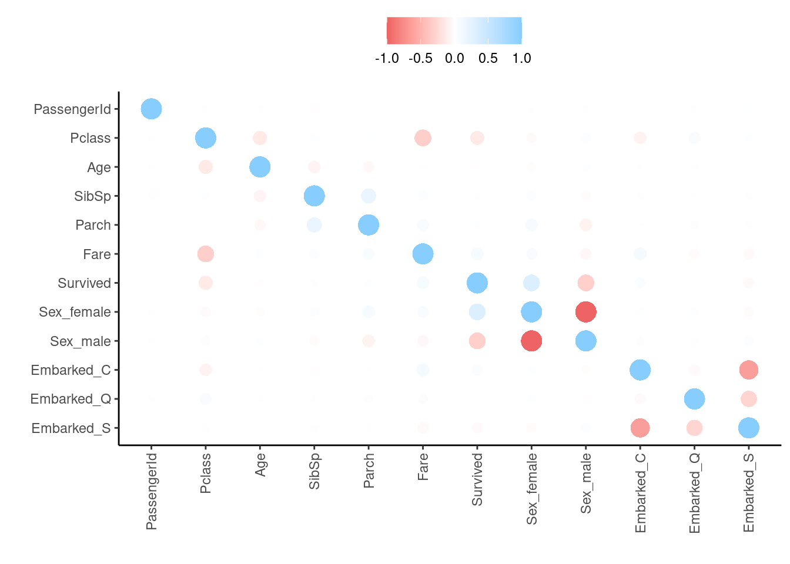 From the correlation plot we see that Fare and PClass are moderately correlated. This can become an issue later on in the modelling process. We also see that Survived primarily is correlated to Sex and PClass. Lets investigate these further.
First let us have a look at how survived is related to sex:
titanic_train %>%
mutate(Survived = as_factor(Survived)) %>%
mutate(Survived = fct_recode(Survived, "Died"="0","Survived"="1")) %>%
ggplot(aes(x=Sex, fill=Survived)) +
geom_bar(position="dodge")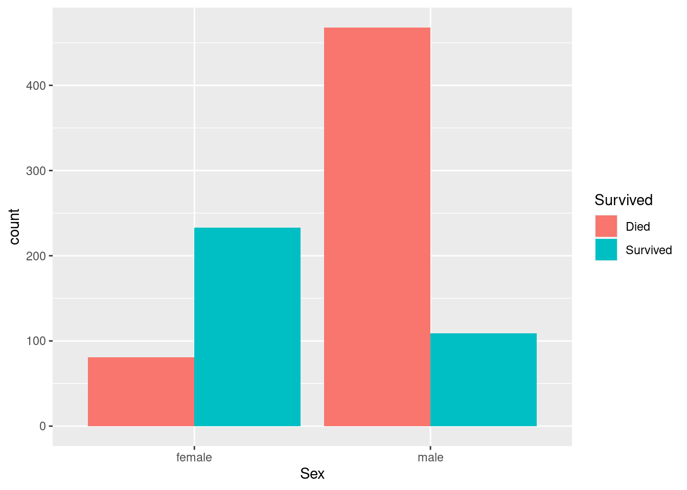 As expected the two variables are correlated. A higher proportion of women survived compared to men.
Next let us have a look at the Pclass vs Survived:
titanic_train %>%
mutate(Survived = as_factor(Survived)) %>%
mutate(Pclass = as_factor(Pclass)) %>%
mutate(Survived = fct_recode(Survived, "Died"="0","Survived"="1")) %>%
ggplot(aes(x=Pclass, fill=Survived)) +
geom_bar(position="dodge")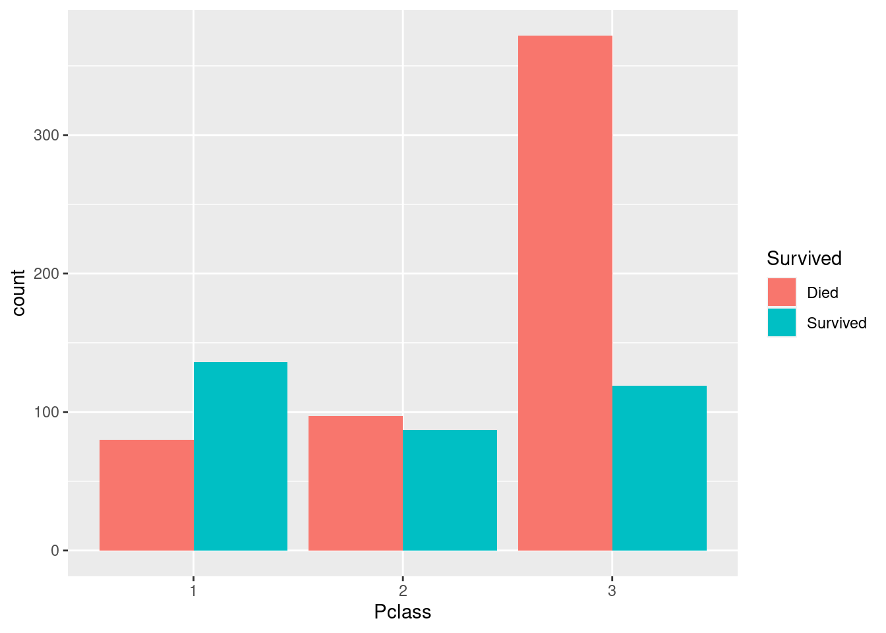 From this we see that a 1st class passenger was more likely to survive than a 3rd class passenger.
Finally we can have a look at the fare distributions of the passengers:
titanic_train %>%
mutate(Survived = as_factor(Survived)) %>%
mutate(Survived = fct_recode(Survived, "Died"="0","Survived"="1")) %>%
ggplot(aes(x=Fare,color=Survived)) +
stat_density(geom="line")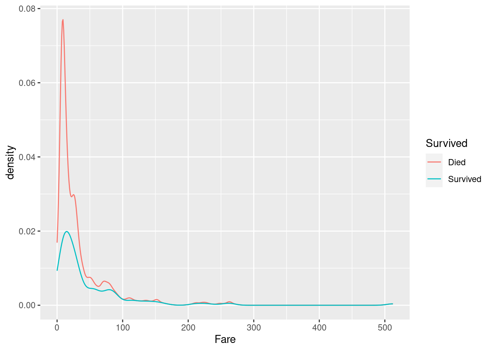 We see that among those that died, there is a higher proportion of passengers with a low fare. This is easily explained from the higher proportion of 3rd class passengers among those who died.
3.3 Modelling
In this section we will develop several models to predict if a passenger will survive or not. Different model classes have different requirements to feature engineering, so we will develop several preprocessing recipes and choose the ones that performs best with respect to accuracy and ROC.
Since some models are able to deal well with NAs we reload the original dataset with missing values for modelling purposes:
titanic_train_model <- read_csv("./titanic_train.csv")## Rows: 891 Columns: 12
## ── Column specification ───────────────────────────────────────────────────────────────────────
## Delimiter: ","
## chr (5): Name, Sex, Ticket, Cabin, Embarked
## dbl (7): PassengerId, Survived, Pclass, Age, SibSp, Parch, Fare
##
## ℹ Use `spec()` to retrieve the full column specification for this data.
## ℹ Specify the column types or set `show_col_types = FALSE` to quiet this message.For the classification models we need the outcome to be a factor variable:
titanic_train_model <- titanic_train_model %>% mutate(Survived = as_factor(Survived))Let us have a look at the skewness of the different numerical variables to decide upon which kind of imputation to choose:
titanic_train_model %>%
select(which(sapply(.,is.numeric)),-PassengerId) %>%
summarise_all(~ moments::skewness(.))## # A tibble: 1 × 5
## Pclass Age SibSp Parch Fare
## <dbl> <dbl> <dbl> <dbl> <dbl>
## 1 -0.629 NA 3.69 2.74 4.78We see that all variables are skewed, so we impute them using the median.
All models use the same formula and need to have the same columns as ID columns, so we begin by making a base recipe for the preprocessing:
titanic_baserec <-
recipe(Survived ~ ., data=titanic_train_model) %>%
step_rm(Ticket,Cabin,Name) %>%
update_role(PassengerId,new_role="ID")To tune the different models we will use 10-fold cross validation. For this purpose we define the folds:
set.seed(123)
titanic_folds <- vfold_cv(titanic_train_model,strata = Survived)3.3.1 Logistic Regression
Logistic regression relies on the features being independent. Moreover it doesn’t do well with missing values and factors with small frequencies. This gives us the following recipe for logistic regression:
titanic_logit_rec <-
titanic_baserec %>%
step_impute_median(all_numeric_predictors()) %>%
step_impute_mode(all_nominal_predictors()) %>%
step_dummy(all_nominal_predictors()) %>%
step_zv(all_predictors())For decorrelation we can choose between PCA and removing correlated variables. Additionally we can decide to normalize the numeric predictors or not. If we do, we use Yeo-Johnson transformation. This gives us the following final recipes for logistic regression:
titanic_logit_pca_nonorm <-
titanic_logit_rec %>%
step_pca(all_predictors())
titanic_logit_decor_nonorm <-
titanic_logit_rec %>%
step_corr(all_predictors())
titanic_logit_pca_norm <-
titanic_logit_rec %>%
step_pca(all_predictors()) %>%
step_YeoJohnson(all_numeric_predictors())
titanic_logit_decor_norm <-
titanic_logit_rec %>%
step_corr(all_predictors()) %>%
step_YeoJohnson(all_numeric_predictors())For models we can use a regularized or un-regularized logistic regression model. For the regularized model we will using 10-fold cross validation tuning to choose the best regularization parameters.
titanic_logit_mod <- logistic_reg() %>%
set_mode("classification") %>%
set_engine("glm")
titanic_reg_logit_mod <- logistic_reg(penalty=tune(),mixture=tune()) %>%
set_mode("classification") %>%
set_engine("glmnet")Now we can define the workflow set for the different models and recipes:
titanic_logit_wfs <-
workflow_set(
preproc = list(DeCorNoNorm = titanic_logit_decor_nonorm,
DeCorNorm = titanic_logit_decor_norm,
PCANoNorm = titanic_logit_pca_nonorm,
PCANorm = titanic_logit_pca_norm),
models = list(regularized = titanic_reg_logit_mod,
unregularized =titanic_logit_mod)
)For tuning the regularized model we define the following tuning grid:
titanic_logit_grid <- grid_regular(penalty(),mixture(),levels=c(5,2)) We are now ready to fit at tune the various models:
titanic_logit_control <- control_grid(
save_pred = TRUE,
parallel_over = "everything",
save_workflow = TRUE
)
titanic_logit_results <-
titanic_logit_wfs %>%
workflow_map(
seed = 1234,
resamples = titanic_folds,
grid = titanic_logit_grid,
control = titanic_logit_control,
metrics = metric_set(accuracy,roc_auc),
verbose = TRUE
)## i 1 of 8 tuning: DeCorNoNorm_regularized## ✓ 1 of 8 tuning: DeCorNoNorm_regularized (23.6s)## i No tuning parameters. `fit_resamples()` will be attempted## i 2 of 8 resampling: DeCorNoNorm_unregularized## ✓ 2 of 8 resampling: DeCorNoNorm_unregularized (8.1s)## i 3 of 8 tuning: DeCorNorm_regularized## ✓ 3 of 8 tuning: DeCorNorm_regularized (24.7s)## i No tuning parameters. `fit_resamples()` will be attempted## i 4 of 8 resampling: DeCorNorm_unregularized## ✓ 4 of 8 resampling: DeCorNorm_unregularized (8.9s)## i 5 of 8 tuning: PCANoNorm_regularized## ✓ 5 of 8 tuning: PCANoNorm_regularized (23.4s)## i No tuning parameters. `fit_resamples()` will be attempted## i 6 of 8 resampling: PCANoNorm_unregularized## ✓ 6 of 8 resampling: PCANoNorm_unregularized (8s)## i 7 of 8 tuning: PCANorm_regularized## ✓ 7 of 8 tuning: PCANorm_regularized (24.6s)## i No tuning parameters. `fit_resamples()` will be attempted## i 8 of 8 resampling: PCANorm_unregularized## ✓ 8 of 8 resampling: PCANorm_unregularized (8.6s)Let us have a plot of the fitted models and workflows:
autoplot(titanic_logit_results,rank_metric="accuracy",select_best = TRUE) +
geom_text(aes(y=0.45,label= wflow_id), angle=90) +
lims(y=c(0.2,0.9)) +
theme(legend.position = "none")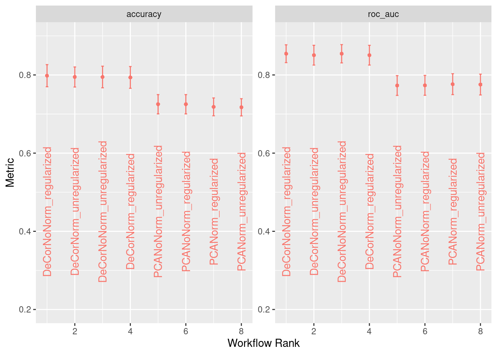 We see that using PCA to decorrelate features is performing worse than simple removal of correlated variables. Moreover normalizing doens’t seem to increase performance and accuracy and ROC agree well when determining best model and workflow.
Let us find the best tuning parameters:
titanic_logit_best_parm <-
titanic_logit_results %>%
extract_workflow_set_result("DeCorNoNorm_regularized") %>%
select_best(metric="accuracy")
titanic_logit_best_parm## # A tibble: 1 × 3
## penalty mixture .config
## <dbl> <dbl> <chr>
## 1 0.0000000001 0 Preprocessor1_Model01So the best option is Lasso regression with a slight penalty of 1.0e-10.
titanic_logit_best_wf <- titanic_logit_results %>%
extract_workflow("DeCorNoNorm_regularized") %>%
finalize_workflow(titanic_logit_best_parm)
titanic_logit_best_mod <- fit(titanic_logit_best_wf,titanic_train_model)
titanic_logit_pred <- predict(titanic_logit_best_mod,new_data=titanic_test)We are now ready to write the predictions to a file and upload to Kaggle:
cbind(PassengerId = titanic_test$PassengerId,titanic_logit_pred) %>%
rename(Survived = .pred_class) %>%
write_csv("./titanic_logit_pred.csv")The Kaggle score (which established the baseline for this chapter), is 0.76315. The accuracy is as expected slightly lower than for the training data, but a very respectable result for a linear model.
Lets us collect the results in a Tibble, which we can use at the end of the chapter:
results_table <- tibble(Model = c("L2-penalized Logistic Regression"), Score = "0.76315")
results_table %>% kbl() %>% kable_material(c("striped","hover"))| Model | Score |
|---|---|
| L2-penalized Logistic Regression | 0.76315 |
3.3.2 LDA
The linear discriminant classifier (LDA-C) is mostly included for reference. In general it is not expected to perform as well as the penalized logistic regression.
Pre-processing for the LDA is almost the same as for logistic regression. We need to remove zero variance variables as well as ID variables. Moreover we need to one-hot encode factors and and de-corrolate features. Finally LDA might benefit from normalization of variables, in which case we use Yeo Johnson transformation.
This leaves us with the following preprocessing recipes:
titanic_lda_nonorm_rec <-
titanic_baserec %>%
step_impute_median(all_numeric_predictors()) %>%
step_impute_mode(all_nominal_predictors()) %>%
step_dummy(all_nominal_predictors()) %>%
step_zv(all_predictors())
titanic_lda_norm_rec <-
titanic_baserec %>%
step_impute_median(all_numeric_predictors()) %>%
step_impute_mode(all_nominal_predictors()) %>%
step_dummy(all_nominal_predictors()) %>%
step_zv(all_predictors()) %>%
step_YeoJohnson(all_numeric_predictors())
titanic_lda_decor_nonorm_rec <-
titanic_baserec %>%
step_impute_median(all_numeric_predictors()) %>%
step_impute_mode(all_nominal_predictors()) %>%
step_dummy(all_nominal_predictors()) %>%
step_zv(all_predictors()) %>%
step_corr(all_predictors())
titanic_lda_decor_norm_rec <-
titanic_baserec %>%
step_impute_median(all_numeric_predictors()) %>%
step_impute_mode(all_nominal_predictors()) %>%
step_dummy(all_nominal_predictors()) %>%
step_zv(all_predictors()) %>%
step_YeoJohnson(all_numeric_predictors()) %>%
step_corr(all_predictors())
titanic_lda_pca_nonorm_rec <-
titanic_baserec %>%
step_impute_median(all_numeric_predictors()) %>%
step_impute_mode(all_nominal_predictors()) %>%
step_dummy(all_nominal_predictors()) %>%
step_zv(all_predictors()) %>%
step_pca(all_predictors())
titanic_lda_pca_norm_rec <-
titanic_baserec %>%
step_impute_median(all_numeric_predictors()) %>%
step_impute_mode(all_nominal_predictors()) %>%
step_dummy(all_nominal_predictors()) %>%
step_zv(all_predictors()) %>%
step_YeoJohnson(all_numeric_predictors()) %>%
step_pca(all_predictors())This section is temporarily aborted due to problems with {Discrim} package.
3.3.3 kNN
With no included preprocessing measures in the algorithm, the kNN model relies on heavy preprocessing steps including one hot encoding of dummy variables, removing zero variance variables, imputing NAs and normalizing variables. Decorrelation might improve importance. This gives us three different workflows:
titanic_knn_rec <-
titanic_baserec %>%
step_impute_median(all_numeric_predictors()) %>%
step_impute_mode(all_nominal_predictors()) %>%
step_dummy(all_nominal_predictors()) %>%
step_zv(all_predictors()) %>%
step_YeoJohnson(all_numeric_predictors())
titanic_knn_decor_rec <-
titanic_knn_rec %>%
step_corr(all_predictors())
titanic_knn_pca_rec <-
titanic_knn_rec %>%
step_pca(all_predictors())We can now define the kNN model
titanic_knn_mod <- nearest_neighbor(neighbors= tune(), weight_func=tune(), dist_power = tune()) %>%
set_mode("classification") %>%
set_engine("kknn")Next we set up the grid for the grid search. We will try 10 levels of n, 9 different weight functions and 4 different distance metrics:
titanic_knn_grid <- grid_regular(neighbors(),weight_func(),dist_power(),levels=c(10,9,4))Now we can define the workflow set for the different models and recipes:
titanic_knn_wfs <-
workflow_set(
preproc = list(NoDecor = titanic_knn_rec,
Decor = titanic_knn_decor_rec,
PCA = titanic_knn_pca_rec),
models = list(kNN = titanic_knn_mod)
)We are now ready to fit and tune the various models:
titanic_knn_control <- control_grid(
save_pred = TRUE,
parallel_over = "everything",
save_workflow = TRUE
)
titanic_knn_results <-
titanic_knn_wfs %>%
workflow_map(
seed = 1234,
resamples = titanic_folds,
grid = titanic_knn_grid,
control = titanic_knn_control,
metrics = metric_set(accuracy,roc_auc),
verbose = TRUE
)## i 1 of 3 tuning: NoDecor_kNN## ✓ 1 of 3 tuning: NoDecor_kNN (13m 12.2s)## i 2 of 3 tuning: Decor_kNN## ✓ 2 of 3 tuning: Decor_kNN (13m 22.6s)## i 3 of 3 tuning: PCA_kNN## ✓ 3 of 3 tuning: PCA_kNN (13m 13.7s)Let us have a plot of the fitted models and workflows:
autoplot(titanic_knn_results,rank_metric="accuracy",select_best = TRUE) +
geom_text(aes(y=0.45,label= wflow_id), angle=90) +
lims(y=c(0.2,0.9)) +
theme(legend.position = "none")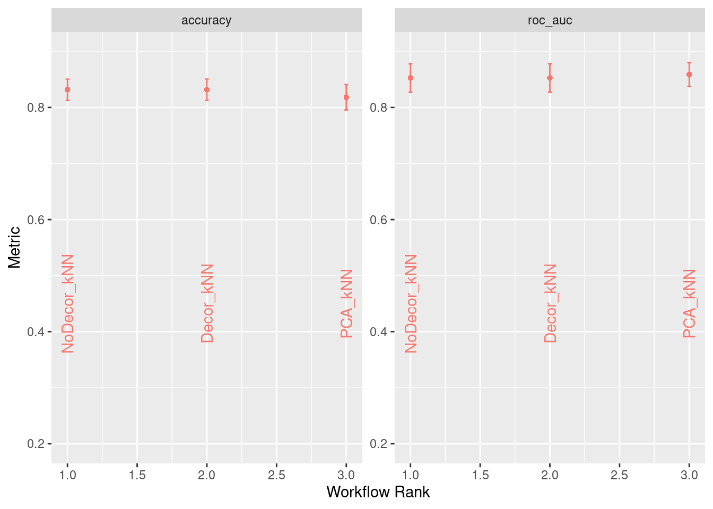 We see that using PCA to decorrelate features is performing slightly worse than simple removal of correlated variables.
Let us find the best tuning parameters with respect to accuray:
titanic_knn_best_parm <-
titanic_knn_results %>%
extract_workflow_set_result("NoDecor_kNN") %>%
select_best(metric="accuracy")
titanic_knn_best_parm## # A tibble: 1 × 4
## neighbors weight_func dist_power .config
## <int> <chr> <dbl> <chr>
## 1 6 rank 2 Preprocessor1_Model236So the best option is kNN with n=6, rank weight function and L2-distance.
We can now define best workflow and fit to the training data
titanic_knn_best_wf <- titanic_knn_results %>%
extract_workflow("NoDecor_kNN") %>%
finalize_workflow(titanic_knn_best_parm)
titanic_knn_best_mod <- fit(titanic_knn_best_wf,titanic_train_model)
titanic_knn_pred <- predict(titanic_knn_best_mod,new_data=titanic_test)We are now ready to write the predictions to a file and upload to Kaggle:
cbind(PassengerId = titanic_test$PassengerId,titanic_knn_pred) %>%
rename(Survived = .pred_class) %>%
write_csv("./titanic_knn_pred.csv")The Kaggle score, is 0.76315. The accuracy is exactly as for the logistic regression model.
Lets us collect the results in a Tibble, which we can use at the end of the chapter:
results_table <- results_table %>% add_row(Model = "6 Nearest Neighbors, Rank weight, L2 distance", Score="0.76315")
results_table %>% kbl() %>% kable_material(c("striped","hover"))| Model | Score |
|---|---|
| L2-penalized Logistic Regression | 0.76315 |
| 6 Nearest Neighbors, Rank weight, L2 distance | 0.76315 |
3.3.4 SVM
The Support Vector Machine relies heavily on preprocessing of data. There are no built in room in the algorithm for dirty data. From the two previous sections it seems that PCA is less favourable for these data, so we will rely on simple decorrolation in this section. For normalizing we will use the BestNormalizer on the data. This leaves us with the following preprocessing recipe:
titanic_svm_rec <-
titanic_baserec %>%
step_impute_median(all_numeric_predictors()) %>%
step_impute_mode(all_nominal_predictors()) %>%
step_dummy(all_nominal_predictors()) %>%
step_zv(all_predictors()) %>%
step_YeoJohnson(all_predictors())In tidymodels the SVM kernel is defined from the model. We will define three models using respectively Linear, Polynomial and Radial Basis Function kernels.
titanic_svm_lin <- svm_linear(cost=tune()) %>%
set_mode("classification") %>%
set_engine("kernlab", scaled=TRUE)
titanic_svm_pol <- svm_poly(cost=tune(),degree=tune()) %>%
set_mode("classification") %>%
set_engine("kernlab", scaled=TRUE)
titanic_svm_radial <- svm_rbf(cost=tune(),rbf_sigma=tune()) %>%
set_mode("classification") %>%
set_engine("kernlab", scaled=TRUE)Now we can define the workflow set for the different models and recipes:
titanic_svm_wfs <-
workflow_set(
preproc = list(rec = titanic_svm_rec),
models = list(Lin = titanic_svm_lin,
Poly = titanic_svm_pol,
RBF = titanic_svm_radial)
)With different number of tuning parameters in the three models, we will rely on tidymodels to choose and apropriate grid of size 25 for the parameters.
We are now ready to fit at tune the various models:
titanic_svm_control <- control_grid(
save_pred = TRUE,
parallel_over = "everything",
save_workflow = TRUE
)
titanic_svm_results <-
titanic_svm_wfs %>%
workflow_map(
seed = 1234,
resamples = titanic_folds,
grid = 25,
control = titanic_svm_control,
metrics = metric_set(accuracy,roc_auc),
verbose = TRUE
)## i 1 of 3 tuning: rec_Lin## ✓ 1 of 3 tuning: rec_Lin (3m 53.2s)## i 2 of 3 tuning: rec_Poly## ✓ 2 of 3 tuning: rec_Poly (13m 27.1s)## i 3 of 3 tuning: rec_RBF## ✓ 3 of 3 tuning: rec_RBF (4m 10.9s)Let us have a look at the results:
titanic_svm_results %>%
rank_results(select_best=TRUE) %>%
filter(.metric == "accuracy")## # A tibble: 3 × 9
## wflow_id .config .metric mean std_err n preprocessor model rank
## <chr> <chr> <chr> <dbl> <dbl> <int> <chr> <chr> <int>
## 1 rec_Poly Preprocessor1_Model01 accuracy 0.824 0.0118 10 recipe svm_poly 1
## 2 rec_RBF Preprocessor1_Model17 accuracy 0.815 0.0119 10 recipe svm_rbf 2
## 3 rec_Lin Preprocessor1_Model01 accuracy 0.787 0.0142 10 recipe svm_linear 3We see that the best performing model uses a Polynomial kernel.
Let us find the best tuning parameters with respect to accuracy:
titanic_svm_best_parm <-
titanic_svm_results %>%
extract_workflow_set_result("rec_Poly") %>%
select_best(metric="accuracy")
titanic_svm_best_parm## # A tibble: 1 × 3
## cost degree .config
## <dbl> <int> <chr>
## 1 0.00369 2 Preprocessor1_Model01So the best option is SVM with 2nd degree Polynomial kernel with cost parameter 3.69e-3.
We can now define best workflow and fit to the training data
titanic_svm_best_wf <- titanic_svm_results %>%
extract_workflow("rec_Poly") %>%
finalize_workflow(titanic_svm_best_parm)
titanic_svm_best_mod <- fit(titanic_svm_best_wf,titanic_train_model)
titanic_svm_pred <- predict(titanic_svm_best_mod,new_data=titanic_test)We are now ready to write the predictions to a file and upload to Kaggle:
cbind(PassengerId = titanic_test$PassengerId,titanic_svm_pred) %>%
rename(Survived = .pred_class) %>%
write_csv("./titanic_svm_pred.csv")The Kaggle score is 0.77272, which is a slight improvement over the previous models, but still inferior when it comes to Kaggle.
Lets us add the results to our table
results_table <- results_table %>% add_row(Model = "Support Vector Machine with 2nd degree polynomial kernel", Score="0.77272")
results_table %>% kbl() %>% kable_material(c("striped","hover"))| Model | Score |
|---|---|
| L2-penalized Logistic Regression | 0.76315 |
| 6 Nearest Neighbors, Rank weight, L2 distance | 0.76315 |
| Support Vector Machine with 2nd degree polynomial kernel | 0.77272 |
3.3.5 Classification trees: C5.0
For the rest of this chapter we will turn our attention to tree based models. The first model is a simple classification tree based on the C5.0 algorithm.
In general classification trees are highly flexible, deal with NAs quite easily and thus require very little preprocessing. To test this we will look at a few different light preprocessing recipes. One is the basic recipe. One adds decorrolation and one further imputes NAs:
titanic_c50_rec <-
titanic_baserec
titanic_c50_impute_rec <-
titanic_c50_rec %>%
step_impute_median(all_numeric_predictors()) %>%
step_impute_mode(all_nominal_predictors())For the model, we will use a decision tree with engine C5.0:
titanic_c50_mod <-
decision_tree(min_n=tune()) %>%
set_engine("C5.0") %>%
set_mode("classification")Now we can define the workflow set for the different recipes:
titanic_c50_wfs <-
workflow_set(
preproc = list(rec = titanic_c50_rec,
impute = titanic_c50_impute_rec),
models = list(c50 = titanic_c50_mod)
)With just a single tunable parameter, we rely on tidymodels to choose an appropriate grid of size 5 for the parameters.
We are now ready to fit at tune the various models:
titanic_c50_control <- control_grid(
save_pred = TRUE,
parallel_over = "everything",
save_workflow = TRUE
)
titanic_c50_results <-
titanic_c50_wfs %>%
workflow_map(
seed = 1234,
resamples = titanic_folds,
grid = 5,
control = titanic_c50_control,
metrics = metric_set(accuracy,roc_auc),
verbose = TRUE
)## i 1 of 2 tuning: rec_c50## ✓ 1 of 2 tuning: rec_c50 (31.3s)## i 2 of 2 tuning: impute_c50## ✓ 2 of 2 tuning: impute_c50 (36.3s)Let us have a plot of the fitted models and workflows:
autoplot(titanic_c50_results,rank_metric="accuracy",select_best = TRUE) +
geom_text(aes(y=0.45,label= wflow_id), angle=90) +
lims(y=c(0.2,0.9)) +
theme(legend.position = "none")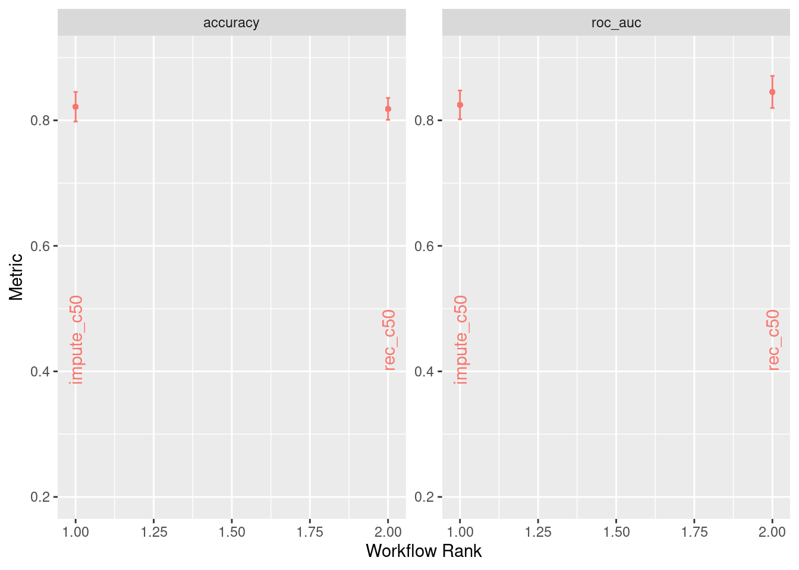 Quite interestingly we see almost similar accuracy from the two workflows, but ROC is higher for the recipe without imputation. Thus, we will continue with this workflow.
Let us find the best tuning parameters with respect to accuracy:
titanic_c50_best_parm <-
titanic_c50_results %>%
extract_workflow_set_result("rec_c50") %>%
select_best(metric="roc_auc")
titanic_c50_best_parm## # A tibble: 1 × 2
## min_n .config
## <int> <chr>
## 1 6 Preprocessor1_Model4So, the best tree has minimal node size 6.
We can now define best workflow and fit to the training data
titanic_c50_best_wf <- titanic_c50_results %>%
extract_workflow("rec_c50") %>%
finalize_workflow(titanic_c50_best_parm)
titanic_c50_best_mod <- fit(titanic_c50_best_wf,titanic_train_model)
titanic_c50_pred <- predict(titanic_c50_best_mod,new_data=titanic_test)We are now ready to write the predictions to a file and upload to Kaggle:
cbind(PassengerId = titanic_test$PassengerId,titanic_c50_pred) %>%
rename(Survived = .pred_class) %>%
write_csv("./titanic_c50_pred.csv")The Kaggle score is 0.78468, which is quite interesting, since simple classification trees are usually weak learnes. This will make the next two sections, where we look at bagging and boosting trees quite interesting.
Lets us add the results to our table
results_table <- results_table %>% add_row(Model = "C5.0 classification tree with minimum leaf size 6", Score="0.78468")
results_table %>% kbl() %>% kable_material(c("striped","hover"))| Model | Score |
|---|---|
| L2-penalized Logistic Regression | 0.76315 |
| 6 Nearest Neighbors, Rank weight, L2 distance | 0.76315 |
| Support Vector Machine with 2nd degree polynomial kernel | 0.77272 |
| C5.0 classification tree with minimum leaf size 6 | 0.78468 |
3.3.6 Bagged tree models: Bagged C5.0 and Random Forests
After our initial tour de simple models, we will now turn our attention to ensemble learning methods. In this subsection we will investigate bagging methods for trees. Specifically we will have a look at traditional bagged C5.0 trees and Random Forests. Traditionally bagged trees have the disadvantage of generating a lot of correlated trees, which dilutes the advantages of ensembles a bit. By using random forests, this should be offset.
As for the simple classification C5.0 tree, bagged trees require very little preprocessing. To some extend, imputing missing values could lead to a difference in prediction. The Random Forest algorithm needs to have missing values imputed. Thus we will use a base recipe as well as the base recipe with imputation of missed values for preprocessing:
titanic_bagged_rec <-
titanic_baserec
titanic_bagged_impute_rec <-
titanic_bagged_rec %>%
step_impute_median(all_numeric_predictors()) %>%
step_impute_mode(all_nominal_predictors())For the model, we will use a decision tree with engine C5.0 or a random forest. Random forests will usually not overfit given a high number of trees. Thus we will not tune the number of trees:
titanic_bagged_c50_mod <-
bag_tree(min_n=tune()) %>%
set_engine("C5.0") %>%
set_mode("classification")
titanic_rf_mod <-
rand_forest(mtry = tune(),trees = 1000, min_n=tune()) %>%
set_engine("ranger") %>%
set_mode("classification")Now we can define the workflow set for the different recipes:
titanic_bag_wfs <-
workflow_set(
preproc = list(impute = titanic_bagged_impute_rec),
models = list(bag_c50 = titanic_bagged_c50_mod)
)
titanic_rf_wfs <-
workflow_set(
preproc = list(impute = titanic_bagged_impute_rec),
models = list(rf= titanic_rf_mod)
)
titanic_bagged_wfs <-
bind_rows(titanic_bag_wfs,titanic_rf_wfs)This time agian, we rely on tidymodels to choose an appropriate grid for the parameters.
We are now ready to fit and tune the various models:
titanic_bagged_control <- control_grid(
save_pred = TRUE,
parallel_over = "everything",
save_workflow = TRUE
)
titanic_bagged_results <-
titanic_bagged_wfs %>%
workflow_map(
seed = 1234,
resamples = titanic_folds,
grid = 16,
control = titanic_bagged_control,
metrics = metric_set(accuracy,roc_auc),
verbose = TRUE
)## i 1 of 2 tuning: impute_bag_c50## ✓ 1 of 2 tuning: impute_bag_c50 (8m 56.2s)## i 2 of 2 tuning: impute_rf## i Creating pre-processing data to finalize unknown parameter: mtry## ✓ 2 of 2 tuning: impute_rf (3m 18.6s)Let us have a plot of the fitted models and workflows:
autoplot(titanic_bagged_results,rank_metric="accuracy",select_best = TRUE) +
geom_text(aes(y=0.65,label= wflow_id), angle=90) +
lims(y=c(0.4,0.9)) +
theme(legend.position = "none")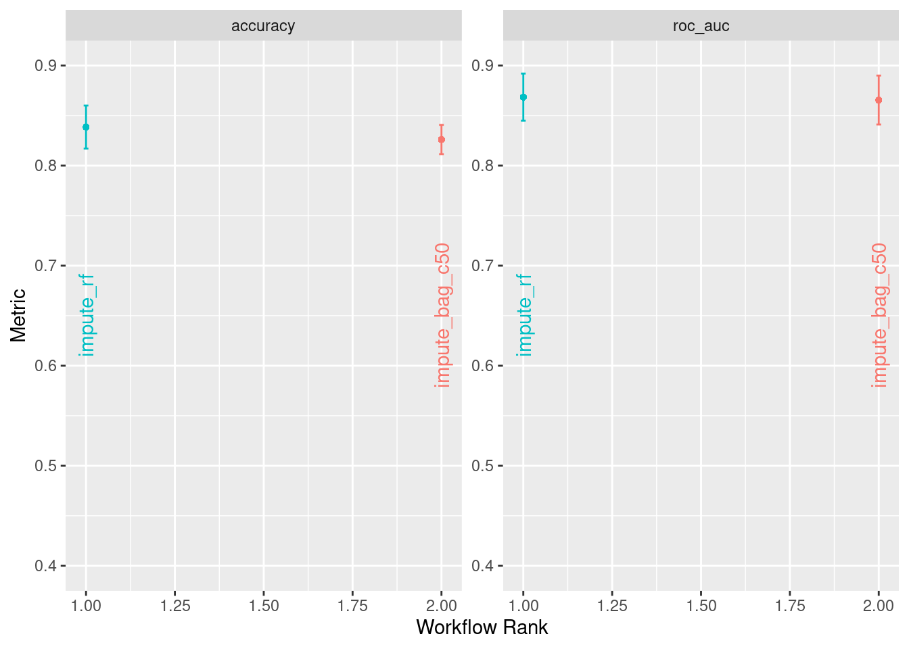 We see that the Random Forest performs slightly better, when it comes to accuracy, than the bagged C5.0, though ROC seems almost similar. Moreover, when can see that the bagged C5.0 benefits slightly from imputation of missing values.
Let us find the best tuning parameters with respect to accuracy:
titanic_bagged_best_parm <-
titanic_bagged_results %>%
extract_workflow_set_result("impute_rf") %>%
select_best(metric="accuracy")
titanic_bagged_best_parm## # A tibble: 1 × 3
## mtry min_n .config
## <int> <int> <chr>
## 1 3 2 Preprocessor1_Model16We see that the best Random Forest workflow uses 3 randomly sampled predictors in each tree and minimum 2 data points in each splitting note.
We can now define best workflow and fit to the training data
titanic_bagged_best_wf <- titanic_bagged_results %>%
extract_workflow("impute_rf") %>%
finalize_workflow(titanic_bagged_best_parm)
titanic_bagged_best_mod <- fit(titanic_bagged_best_wf,titanic_train_model)
titanic_bagged_pred <- predict(titanic_bagged_best_mod,new_data=titanic_test)We are now ready to write the predictions to a file and upload to Kaggle:
cbind(PassengerId = titanic_test$PassengerId,titanic_bagged_pred) %>%
rename(Survived = .pred_class) %>%
write_csv("./titanic_bagged_pred.csv")The Kaggle score is 0.76794, which remarkably is worse than for the single C5.0 tree. Lets try submitting the best bagged C5.0 results as well:
titanic_bagged_c50_best_parm <-
titanic_bagged_results %>%
extract_workflow_set_result("impute_bag_c50") %>%
select_best(metric="roc_auc")
titanic_bagged_c50_best_parm## # A tibble: 1 × 2
## min_n .config
## <int> <chr>
## 1 7 Preprocessor1_Model02titanic_bagged_c50_best_wf <- titanic_bagged_results %>%
extract_workflow("impute_bag_c50") %>%
finalize_workflow(titanic_bagged_c50_best_parm)
titanic_bagged_c50_best_mod <- fit(titanic_bagged_c50_best_wf,titanic_train_model)
titanic_bagged_c50_pred <- predict(titanic_bagged_c50_best_mod,new_data=titanic_test)
cbind(PassengerId = titanic_test$PassengerId,titanic_bagged_c50_pred) %>%
rename(Survived = .pred_class) %>%
write_csv("./titanic_bagged_c50_pred.csv")The Kaggle score for the bagged C5.0 is 0.78708, and thus it outperforms the random forest. One might ask if the random forest actually is overfit, even though they should have a tendency to do so.
Lets us add the results to our table
results_table <- results_table %>% add_row(Model = "Random Forest with mtry=3 and min_n = 2", Score="0.76794") %>% add_row(Model = "Bagged C5.0 minimum leaf size 7", Score="0.78708")
results_table %>% kbl() %>% kable_material(c("striped","hover"))| Model | Score |
|---|---|
| L2-penalized Logistic Regression | 0.76315 |
| 6 Nearest Neighbors, Rank weight, L2 distance | 0.76315 |
| Support Vector Machine with 2nd degree polynomial kernel | 0.77272 |
| C5.0 classification tree with minimum leaf size 6 | 0.78468 |
| Random Forest with mtry=3 and min_n = 2 | 0.76794 |
| Bagged C5.0 minimum leaf size 7 | 0.78708 |
3.3.7 Boosted tree models: XGBoost.
In this final subsection of models we will have a look at a different class of ensemble methods. Where bagged trees rely on bootstrapping the data to build a host of trees, boosting relies on building trees, that capture the features that have not yet been explained by the previous models. Thus, boosting is an example of a slow learner. And just as in the real world, slow learning often proves to be the most efficient. We will here have a look at two algorithms. The first is XGBoost, well known for being one of the most efficient and successful classification algorithms. The downside is, that the algorithm has a wide range of tunable parameters, and thus it can be costly to fit to data. Thus, we will also take a look at lightGBM, which can be up to 7 times faster to fit and tune than XGBoost, but has a small risk of overfitting.
Reading the documentation for the engines, XGBoost requires factors to be dummy encoded and missing values to be imputed. This gives us the following recipe for the boosting models:
titanic_boost_rec <- titanic_baserec %>%
step_impute_median(all_numeric_predictors()) %>%
step_impute_mode(all_nominal_predictors()) %>%
step_dummy(all_nominal_predictors())Now we can define the models:
titanic_xgb_mod <- boost_tree(trees=tune(),min_n=tune(),tree_depth=tune(),
learn_rate = tune(), loss_reduction = tune()) %>%
set_mode("classification") %>%
set_engine("xgboost")The associated grid is
titanic_boost_grid <- grid_regular(trees(),min_n(),tree_depth(),
learn_rate(),loss_reduction(),levels=5) Now we can define the workflow sets:
titanic_boost_wfs <-
workflow_set(
preproc = list(rec = titanic_boost_rec),
models = list(xgb= titanic_xgb_mod)
)With a grid of size \(5^4=625\) and relatively expensive models to fit, we will use tune_racing_anova to speed up the process. Tune_racing_anova is a method where is set of parameters is initially screened and obviously inefficient sets are discarded. Another option could have been to use a spacefilling grid instead of a regular grid.
titanic_boost_control <- control_grid(
save_pred = TRUE,
parallel_over = "everything",
save_workflow = TRUE
)
titanic_boost_results <-
titanic_boost_wfs %>%
workflow_map(
seed = 1234,
resamples = titanic_folds,
grid = titanic_boost_grid,
control = titanic_boost_control,
verbose = TRUE,
objective = "binary:logistic",
eval_metric = "logloss"
)## i 1 of 1 tuning: rec_xgb## ✓ 1 of 1 tuning: rec_xgb (4h 25m 9.9s)Let us have a plot of the fitted models and workflows:
autoplot(titanic_boost_results,rank_metric="accuracy",select_best = TRUE) +
geom_text(aes(y=0.65,label= wflow_id), angle=90) +
lims(y=c(0.4,0.9)) +
theme(legend.position = "none")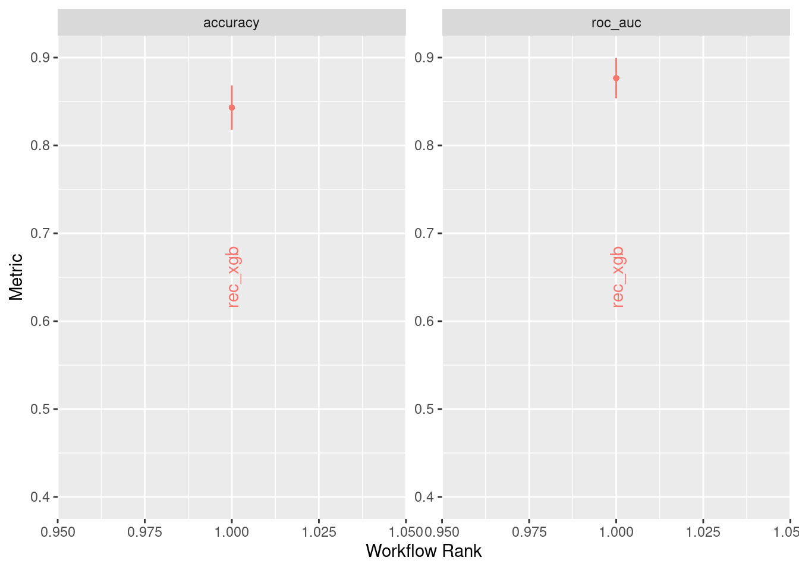 We see that both accuracy and ROC are in the same ballpark as for the other models. It will be interesting to see if the XGBoost is better at generalizing the results to the test data.
Let us find the best tuning parameters with respect to accuracy:
titanic_boost_best_parm <-
titanic_boost_results %>%
extract_workflow_set_result("rec_xgb") %>%
select_best(metric="accuracy")
titanic_boost_best_parm## # A tibble: 1 × 6
## trees min_n tree_depth learn_rate loss_reduction .config
## <int> <int> <int> <dbl> <dbl> <chr>
## 1 500 11 4 0.1 0.0422 Preprocessor1_Model0867We see that the best results are obtained with 500 trees, minimum node size when splitting of 11, a tree depth of each tree of 4 and a learning rate of 0.1. The learning rate is seen to be lower than the default learning rate for the XGBoost engine of 0.3
We can now define best workflow and fit to the training data
titanic_boost_best_wf <- titanic_boost_results %>%
extract_workflow("rec_xgb") %>%
finalize_workflow(titanic_boost_best_parm)
titanic_boost_best_mod <- fit(titanic_boost_best_wf,titanic_train_model)## [15:56:48] WARNING: amalgamation/../src/learner.cc:1115: Starting in XGBoost 1.3.0, the default evaluation metric used with the objective 'binary:logistic' was changed from 'error' to 'logloss'. Explicitly set eval_metric if you'd like to restore the old behavior.titanic_boost_pred <- predict(titanic_boost_best_mod,new_data=titanic_test)We are now ready to write the predictions to a file and upload to Kaggle:
cbind(PassengerId = titanic_test$PassengerId,titanic_boost_pred) %>%
rename(Survived = .pred_class) %>%
write_csv("./titanic_boost_pred.csv")The Kaggle score is 0.75837, which could indicate an overfitted model.
Lets us add the results to our table
results_table <- results_table %>% add_row(Model = "XGBoost with 500 trees, min_n=11 and tree_depth = 4, ", Score="0.75837")
results_table %>% kbl() %>% kable_material(c("striped","hover"))| Model | Score |
|---|---|
| L2-penalized Logistic Regression | 0.76315 |
| 6 Nearest Neighbors, Rank weight, L2 distance | 0.76315 |
| Support Vector Machine with 2nd degree polynomial kernel | 0.77272 |
| C5.0 classification tree with minimum leaf size 6 | 0.78468 |
| Random Forest with mtry=3 and min_n = 2 | 0.76794 |
| Bagged C5.0 minimum leaf size 7 | 0.78708 |
| XGBoost with 500 trees, min_n=11 and tree_depth = 4, | 0.75837 |
With this, we conclude the test of simple models. The best model was a bagged C5.0 tree with a score of 0.78708. This was achieved with a fairly simple preprocessing and CV-tuning of hyperparameters. Though acceptable, it is not sufficient to reach the desired score of at least 80%. Thus we will have to make a more refined model.
3.4 Improved model for Titanic data
In this section we will look at the preprocessing of data from the Titanic data set. In the simple models, we imputed fare and age by median values for the entire population and embark by mode. Though reasonable assumptions, we will have to improve at least on the age imputation. Moreover we will introduce new variables derived from the name column.
Let us start by loading the data again:
set.seed(123)
train2 <- read_csv("./titanic_train.csv",show_col_types = F)
test2 <- read_csv("./titanic_test.csv",show_col_types = F)First we will remove the Ticket and Cabin columns as well as change data type for passenger class, Pclass, and outcome varible, Survived. The same operations with the exception of the survived data, is done on the test data.
train2 <- train2 %>%
mutate(Ticket = NULL) %>%
mutate(Cabin = NULL) %>%
mutate(Survived = as_factor(Survived)) %>%
mutate(Pclass = as_factor(Pclass))
test2 <- test2 %>%
mutate(Ticket = NULL) %>%
mutate(Cabin = NULL) %>%
mutate(Pclass = as_factor(Pclass))Next we will add a new variable FamilySize to the data sets. We distinguish between singles, couples, small families and large families. Singles are identified as having both Parch and SibSp equal to 0. Couples have SibSp equal to 1 and Parch equal to 0. Small familes have sum of Parch and SipSp less than 5 and large familes greater than 5:
train2 <- train2 %>%
mutate(FamilySize = SibSp + Parch) %>%
mutate(Family = case_when((SibSp == 0 & Parch == 0) ~ "Single",
(SibSp == 1 & Parch == 0) ~ "Couple",
between(FamilySize,1,5) ~ "Small",
SibSp+Parch > 5 ~"Large"))
test2 <- test2 %>%
mutate(FamilySize = SibSp + Parch) %>%
mutate(Family = case_when((SibSp == 0 & Parch == 0) ~ "Single",
(SibSp == 1 & Parch == 0) ~ "Couple",
between((SibSp + Parch),1,5) ~ "Small",
SibSp+Parch > 5 ~"Large"))The next new variable is the Title. There are several titles for the passengers aboard the Titanic, and some of the are only covering a very few people. Thus we will group the titles in fewer titles:
train2 <- train2 %>%
mutate(Title = case_when(
str_detect(Name,coll("Mr.")) ~ "Mr",
str_detect(Name,coll("Mrs.")) ~ "Mrs",
str_detect(Name,coll("Ms.")) ~ "Miss",
str_detect(Name,coll("Miss.")) ~ "Miss",
str_detect(Name,coll("Master.")) ~ "Master",
str_detect(Name,coll("Dr.")) ~ "Doktor",
str_detect(Name,coll("Rev.")) ~ "Mr",
str_detect(Name,coll("Mlle.")) ~ "Miss",
str_detect(Name,coll("Mme.")) ~ "Mrs",
str_detect(Name,coll("Sir.")) ~ "Noble",
str_detect(Name,coll("Countess.")) ~ "Noble",
str_detect(Name,coll("Lady.")) ~ "Noble",
str_detect(Name,coll("Jonkheer.")) ~ "Noble",
str_detect(Name,coll("Don.")) ~ "Noble",
str_detect(Name,coll("Dona.")) ~ "Noble",
str_detect(Name,coll("Col.")) ~ "Military",
str_detect(Name,coll("Capt.")) ~ "Military",
str_detect(Name,coll("Major.")) ~ "Military",
))
test2 <- test2 %>%
mutate(Title = case_when(
str_detect(Name,coll("Mr.")) ~ "Mr",
str_detect(Name,coll("Mrs.")) ~ "Mrs",
str_detect(Name,coll("Ms.")) ~ "Miss",
str_detect(Name,coll("Miss.")) ~ "Miss",
str_detect(Name,coll("Master.")) ~ "Master",
str_detect(Name,coll("Dr.")) ~ "Doktor",
str_detect(Name,coll("Rev.")) ~ "Mr",
str_detect(Name,coll("Mlle.")) ~ "Miss",
str_detect(Name,coll("Mme.")) ~ "Mrs",
str_detect(Name,coll("Sir.")) ~ "Noble",
str_detect(Name,coll("Countess.")) ~ "Noble",
str_detect(Name,coll("Lady.")) ~ "Noble",
str_detect(Name,coll("Jonkheer.")) ~ "Noble",
str_detect(Name,coll("Don.")) ~ "Noble",
str_detect(Name,coll("Dona.")) ~ "Noble",
str_detect(Name,coll("Col.")) ~ "Military",
str_detect(Name,coll("Capt.")) ~ "Military",
str_detect(Name,coll("Major.")) ~ "Military",
))The final new feature is the family name of the passengers. In the name column, the family name is located first and separated by a comma. Thus we will retrieve all characters before the comma in the name column. Finally we will remove redundant columns together with the name column:
train2 <- train2 %>%
mutate(FamilyNameLoc = str_locate(Name,",")[,1]) %>%
mutate(FamilyName = str_sub(Name,1,FamilyNameLoc-1)) %>%
mutate(Name=NULL) %>%
mutate(FamilyNameLoc = NULL)
test2 <- test2 %>%
mutate(FamilyNameLoc = str_locate(Name,",")[,1]) %>%
mutate(FamilyName = str_sub(Name,1,FamilyNameLoc-1)) %>%
mutate(Name=NULL) %>%
mutate(FamilyNameLoc = NULL)With the new variables introduced, let us have a look at missing data for train set and test set:
train2 %>%
select(which(colSums(is.na(.))>0)) %>%
summarise_all(~ sum(is.na(.)))## # A tibble: 1 × 2
## Age Embarked
## <int> <int>
## 1 177 2test2 %>%
select(which(colSums(is.na(.))>0)) %>%
summarise_all(~ sum(is.na(.)))## # A tibble: 1 × 2
## Age Fare
## <int> <int>
## 1 86 1The missing age and fare data will be imputed by the mean of age and fare respectively for passengers from the train data with the same title.
We begin by making a table of mean age and mean fare for each title:
Impute_table <- train2 %>%
group_by(Title) %>%
summarise(mean_age=mean(Age,na.rm=T),mean_fare=mean(Fare,na.rm=T))The means are added to the data sets, missing values imputed and the the means are removed from the data sets again.
train2 <- left_join(train2,Impute_table,by=c("Title")) %>%
mutate(Age = if_else(is.na(Age),mean_age,Age)) %>%
mutate(Fare = if_else(is.na(Fare),mean_fare,Fare)) %>%
mutate(mean_age = NULL) %>%
mutate(mean_fare = NULL)
test2 <- left_join(test2,Impute_table,by=c("Title")) %>%
mutate(Age = if_else(is.na(Age),mean_age,Age)) %>%
mutate(Fare = if_else(is.na(Fare),mean_fare,Fare)) %>%
mutate(mean_age = NULL) %>%
mutate(mean_fare = NULL)Let us do one final check that all missing values are gone:
train2 %>%
select(which(colSums(is.na(.))>0)) %>%
summarise_all(~ sum(is.na(.)))## # A tibble: 1 × 1
## Embarked
## <int>
## 1 2test2 %>%
select(which(colSums(is.na(.))>0)) %>%
summarise_all(~ sum(is.na(.)))## # A tibble: 1 × 0With this we are ready to do the actual modelling. With all the preprocessing already done, the recipe is very simple:
imp_rec <-
recipe(Survived ~ ., data=train2) %>%
update_role(PassengerId,new_role="ID") %>%
step_impute_mode(Embarked)We will only fit the bagged C5.0 models, since they did best for the simple preprocessing. Somehow R is having problems tuning the bagged C5.0 model with the data set at hand, so instead we will fit models with min_n ranging from 7 to 10.
imp_bc50_7 <-
bag_tree(min_n=7) %>%
set_engine("C5.0") %>%
set_mode("classification")
imp_bc50_8 <-
bag_tree(min_n=8) %>%
set_engine("C5.0") %>%
set_mode("classification")
imp_bc50_9 <-
bag_tree(min_n=9) %>%
set_engine("C5.0") %>%
set_mode("classification")
imp_bc50_10 <-
bag_tree(min_n=10) %>%
set_engine("C5.0") %>%
set_mode("classification")Let us define the workflow sets:
imp_workflow_bc50_7 <-
workflow(imp_rec,imp_bc50_7)
imp_workflow_bc50_8 <-
workflow(imp_rec,imp_bc50_8)
imp_workflow_bc50_9 <-
workflow(imp_rec,imp_bc50_9)
imp_workflow_bc50_10 <-
workflow(imp_rec,imp_bc50_10)We can now fit each of the models to the training data
imp_best_mod_bc50_7 <- fit(imp_workflow_bc50_7,train2)
imp_best_mod_bc50_8 <- fit(imp_workflow_bc50_8,train2)
imp_best_mod_bc50_9 <- fit(imp_workflow_bc50_9,train2)
imp_best_mod_bc50_10 <- fit(imp_workflow_bc50_10,train2)
imp_pred_bc50_7 <- predict(imp_best_mod_bc50_7,new_data=test2)
imp_pred_bc50_8 <- predict(imp_best_mod_bc50_8,new_data=test2)
imp_pred_bc50_9 <- predict(imp_best_mod_bc50_9,new_data=test2)
imp_pred_bc50_10 <- predict(imp_best_mod_bc50_10,new_data=test2)We are now ready to write the predictions to a file and upload to Kaggle:
cbind(PassengerId = test2$PassengerId,imp_pred_bc50_7) %>%
rename(Survived = .pred_class) %>%
write_csv("./titanic_imp_pred_bc50_7.csv")
cbind(PassengerId = test2$PassengerId,imp_pred_bc50_8) %>%
rename(Survived = .pred_class) %>%
write_csv("./titanic_imp_pred_bc50_8.csv")
cbind(PassengerId = test2$PassengerId,imp_pred_bc50_9) %>%
rename(Survived = .pred_class) %>%
write_csv("./titanic_imp_pred_bc50_9.csv")
cbind(PassengerId = test2$PassengerId,imp_pred_bc50_10) %>%
rename(Survived = .pred_class) %>%
write_csv("./titanic_imp_pred_bc50_10.csv")